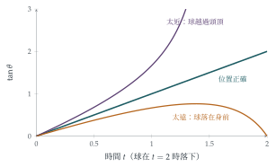

STEP II 1998，第 11 題
繼續之前，請先閱讀題目（原題為英文）。題目載於 STEP Support Programme 的題目資料庫： step.maths.org/questions/98-s2-q11
引子
球被高高擊向外野。出色的外野手會立刻起步，並且剛好在球落下的一刻趕到。這是怎樣做到的？沒有人能在不足一秒之內心算出拋體運動（projectile motion）的方程，何況外野手根本不知道球的速率和角度。然而外野手，以至接飛碟的狗，都能輕易做到。
1968 年，物理學家 Seville Chapman 提出了一個答案，而本題正是要證明它。假如外野手留意着球的仰角（angle of elevation）\(\theta\)，並且移動自己的位置，使 \(\tan\theta\) 以恆定的速率增加，她就會剛好到達球的落點。她毋須懂得任何物理，只需能察覺球看起來是升得比穩定上升快，還是比穩定上升慢。一個困難的預測問題，就這樣換成了一條簡單的反饋（feedback）法則。
動筆之前
設擊球手位於原點，外野手在距離 \(D\) 處。若球位於 \((x, y)\)，\(\tan\theta\) 是甚麼？
球在外野手眼睛上方高度 \(y\) 處，並在她前方水平距離 \(D - x\) 處（球正朝她飛來）。所以 \(\tan\theta = \frac{y}{D - x}\)。
逐步解題
階段 1 位置恰到好處的外野手
設球的水平速率為 \(U\)，初始垂直速率為 \(W\)，並在時間 \(T\) 落下（回到眼睛的高度）。試以 \(U\)、\(W\)、\(T\)、\(g\) 和 \(t\) 表示 \(x\)、\(y\) 和 \(D\)。你能把 \(y\) 因式分解嗎？
我們有 \(x = Ut\) 和 \(y = Wt - \frac12gt^2\)，而球在 \(T = \frac{2W}{g}\) 時回到眼睛的高度，外野手正在該處：\(D = UT\)。由於 \(W = \frac12gT\)， \[y = \tfrac12gt(T - t), \qquad D - x = U(T - t).\] 因子 \(T - t\) 可以約去： \[\tan\theta = \frac{\frac12gt(T - t)}{U(T - t)} = \frac{g}{2U}\,t.\] 所以 \(\frac{\mathrm{d}}{\mathrm{d}t}\tan\theta = \frac{g}{2U}\)，是一個常數。■
階段 2 奔跑中的外野手
現在外野手從距離 \(D_0\) 處起步，以速率 \(v\) 跑向擊球手，所以她的位置是 \(D_0 - vt\)。她在時間 \(T\) 接到球。\(D_0\) 是甚麼？把剛才的計算重做一次。
要在時間 \(T\) 接到球，她必須身處球的落點：\(D_0 - vT = UT\)，所以 \(D_0 = (U + v)T\)。她與球的水平距離是 \(D_0 - vt - Ut = (U + v)(T - t)\)，而該因子同樣可以約去： \[\tan\theta = \frac{\frac12gt(T - t)}{(U + v)(T - t)} = \frac{g}{2(U + v)}\,t.\] 所以只要她以適當的速率奔跑，\(\tan\theta\) 就會以恆定的速率增加。
題目問的是逆命題（converse）：假如她奔跑時令 \(\frac{\mathrm{d}}{\mathrm{d}t}\tan\theta\) 保持不變，她會接到球嗎？
假設她以速率 \(v\) 奔跑，而 \(\tan\theta = \frac{\frac12gt(T - t)}{D_0 - (U + v)t}\) 以恆定的速率 \(c\) 增加，所以 \(\tan\theta = ct\)（在 \(t = 0\) 時它等於 \(0\)）。於是 \[\tfrac12g(T - t) = c\bigl(D_0 - (U + v)t\bigr) \quad\text{對所有 } t.\] 比較 \(t\) 的係數和常數項：\(\frac12g = c(U + v)\) 及 \(\frac12gT = cD_0\)。兩式相除，得 \(D_0 = (U + v)T\)：這正是在時間 \(T\) 身處落點的條件。所以她應選擇 \(v\) 使 \(\tan\theta\) 保持穩定上升，這樣她就能接到球。■

回顧
找出公因子。高度和水平距離都含有 \(T - t\)，把它約去後，\(\tan\theta\) 就變成線性。
證明逆命題。要說明這條法則行得通（即它確實令人接到球），需要反方向的論證，也就是比較係數。
容易察覺的不變量（invariant）。\(\tan\theta\) 是否穩定上升，憑肉眼就能判斷；落點則不能。
背後的數學
光學加速度抵消
Chapman 的法則現稱為光學加速度抵消（optical acceleration cancellation）：外野手移動自己的位置，使「光學加速度」\(\frac{\mathrm{d}^2}{\mathrm{d}t^2}\tan\theta\) 保持為零。假如球的影像加速上升，球就會越過她的頭頂，所以她要後退；假如影像減速，球就會落在她身前，所以她要向前跑（圖 11.11.1）。這個策略沒有告訴她球會落在哪裏，卻能把她帶到那裏。這是一條反饋控制律（feedback control law），與導引導彈所用的同出一轍：導彈採用比例導引（proportional navigation），使指向目標的視線角保持不變，那正是同一個想法的橫向版本。
外野手實際怎樣做
真實的外野手是否採用 Chapman 的法則？1990 年代有人把攝影機裝在棒球外野手的頭上做實驗，結果並不一致。Michael McBeath 及其同事於 1995 年在 Science 上提出，對於打向一側的球，外野手會沿彎曲的路線奔跑，使球的影像在視野中沿直線移動（即「線性光學軌跡」，linear optical trajectory），這同樣能把他們帶到接球的位置。其後的研究顯示，這兩種策略以及兩者的混合都有人使用，而且外野手往往並非以恆定速率奔跑。2004 年的一項研究發現，接飛碟的狗所走的路線，與同樣的光學法則吻合。無論細節如何，這個令人驚嘆的結論依然成立：接球並不需要預測，只需要正確的反饋。
Seville Chapman 的「Catching a baseball」於 1968 年刊登在 American Journal of Physics，全文只有三頁，內容基本上就是本題的計算。他指出這個策略只在沒有空氣阻力時才成立，而真實棒球的軌跡會因阻力和旋轉而變形，令情況變得複雜。儘管如此，大腦利用視野中簡單的不變量來解決複雜的控制問題，這個想法在心理學和機械人學中已變得十分重要。
思維技巧
當某個量難以預測時，不妨找一個與它相關、可以直接觀察的量，而這個量恰好在一切順利時表現得簡單。
在這裏，落點難以預測，但 \(\tan\theta\) 的變化率卻容易監察。在大學裏，這就是反饋控制的想法，也是選擇一個可觀察量、讓它包含你所需信息的想法。
延伸練習
向後跑。假如球會落在外野手起步位置的後方，證明她應該背離擊球手奔跑，而同一條法則依然適用。
不是 \(\theta\) 本身。證明對於位置恰到好處的外野手，\(\frac{\mathrm{d}\theta}{\mathrm{d}t}\) 並非常數。為甚麼 \(\tan\theta\) 才是應該留意的量？
眼睛的高度。假如球是從外野手眼睛高度以下 \(h\) 的位置擊出，對於位置恰當的外野手，\(\tan\theta\) 是否仍然是 \(t\) 的線性函數？（假設她在眼睛的高度接球。）
空氣阻力。在線性空氣阻力之下，水平速度會按指數衰減。對於位置恰當的外野手，\(\tan\theta\) 是否仍然是 \(t\) 的線性函數？
延伸閱讀
Seville Chapman，「Catching a baseball」，American Journal of Physics 36 (1968)。
Michael McBeath、Dennis Shaffer 及 Mary Kaiser，「How baseball outfielders determine where to run to catch fly balls」，Science 268 (1995)。
Dennis Shaffer 等，「How dogs navigate to catch Frisbees」，Psychological Science 15 (2004)。